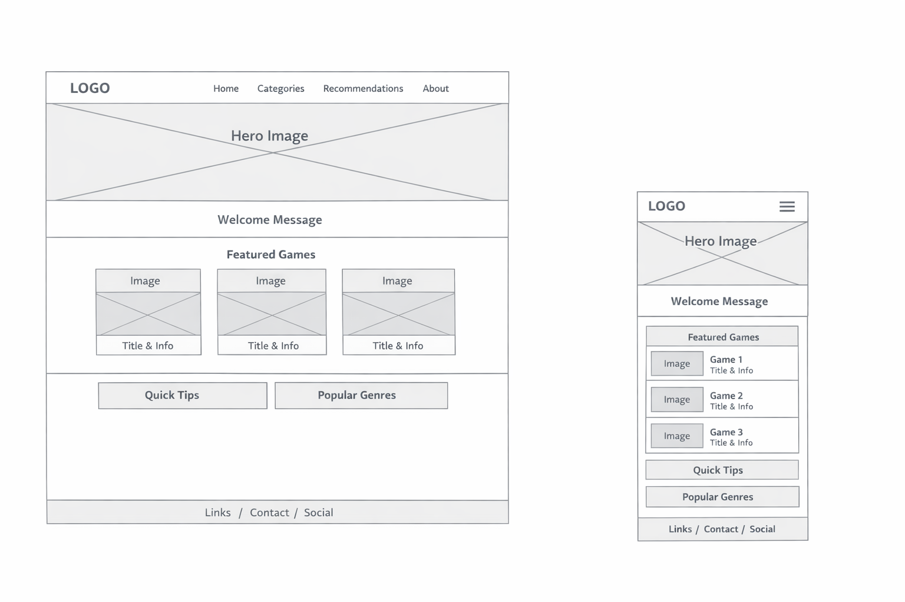

1. Site Name
Casual Video Games Worth Playing
This site name was chosen because it clearly communicates the focus of the website. It lets visitors immediately know that the site is about recommending video games that are accessible, relaxing, and enjoyable without requiring large time commitments or advanced gaming skills.
2. Site Purpose
The purpose of this website is to help casual gamers discover video games that fit their lifestyle. The site will showcase games that are easy to learn, can be played in short sessions, and are designed to be relaxing or low-stress. Content will include brief game descriptions, estimated playtime, platform availability, and reasons why each game is considered casual-friendly.
The website is not intended to cover competitive esports titles or games that require long, uninterrupted play sessions.
3. Scenarios
- What video games can I play if I only have 20–30 minutes at a time?
- What are some relaxing or low-stress games I can play after a long day?
- Are there beginner-friendly games that do not require a lot of gaming experience?
4. Color Scheme
The website will use a calm, modern color palette that reflects a relaxing gaming experience.
- Primary Color: #1F2933 – Used for headers, navigation bar, and footer backgrounds.
- Secondary Color: #3B82F6 – Used for buttons, links, and highlights.
- Background Color: #F9FAFB – Used for the main page background to improve readability.
5. Typography
- Headings: Montserrat – Used for page titles and section headings.
- Body Text: Open Sans, sans-serif – Used for paragraphs and descriptions to ensure readability.
6. Wireframe

These wireframes represent layout structure only and do not include final styling or content.
7. Light and Dark Mode Feature
This website includes a light and dark mode toggle to improve user experience and accessibility. Light mode provides a clean, bright interface that is easy to read in well-lit environments, while dark mode offers a low-light alternative that reduces eye strain and adds visual interest.
The theme toggle allows users to switch between modes using a button located in the site header. Dark mode is implemented using CSS custom properties, allowing colors such as backgrounds, text, borders, and accents to update dynamically without changing the page structure.
This feature enhances usability, demonstrates modern web design practices, and adds personality to the site while maintaining readability and consistency across devices.